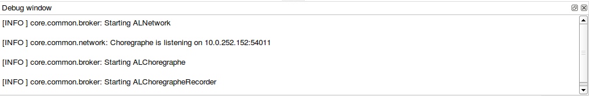

NAOqi is the name of the main software that runs on the robot and controls it.
NAOqi is automatically launched in startup.
The script /etc/init.d/naoqi manages NAOqi’s start:
To restart NAOqi, execute on the robot:
nao restart
To stop NAOqi, execute on the robot:
.. code-block:: console
nao stop
Note
Available commands for controlling the execution of NAOqi: nao stop, nao start, nao restart and nao status.
You can also restart and stop NAOqi from the robot’s web page.
This section assumes that the module has been successfully cross-compiled and copied on the robot.
If you want to use a module which is not loaded by default in NAOqi, you will have to make it load at the beginning of naoqi. To do so, you must modify the autoload.ini file.
The /home/nao/naoqi/preferences/autoload.ini file contains all libraries to launch when NAOqi start.
Example:
[user]
the/full/path/to/your/liblibraryname.so # load liblibraryname.so
If your custom module requires other librairies, first make sure that they are properly cross-compiled and copied to the robot. Then, to allow naoqi to find these librairies, you must set LD_LIBRARY_PATH to the path of these current librairies (typically /home/nao/naoqi/lib/):
export LD_LIBRARY_PATH=/full/path/to/your/libs
Then run naoqi as usual.
By default, if you are logged via ssh on the robot, no NAOqi log shows. There are two ways to visualize the logs:
To use logview:
Type the command logview on the console, and give it the IP where you want to see the logs (127.0.0.1 for example if you are already on the robot).
To launch naoqi from the console in debug mode:
Run the following command line from /home/nao/:
naoqi -d
This command line is blocking.
Warning
NAOqi is running on this console: if you interrupt it, you also kill NAOqi, so be particularly careful if you do so to prevent the robot from falling abruptly.
The logs will typically start like this:
[INFO ] ..::: starting NAOqi version 1.12 :::..
[INFO ] Copyright (c) 2011, Aldebaran Robotics
[INFO ] Starting ALNetwork
[INFO ] NAOqi is listening on 0.0.0.0:9559
[INFO ] Loading "/etc/naoqi/autoload.ini"
Then the list of starting modules will appear. NAOqi startup is complete when the following log shows:
[INFO ] NAOqi is ready...
It is also possible to view NAOqi logs from Choregraphe. To do so, check the “view all logs” box at the bottom left of the log console. From that moment, both Choregraphe and NAOqi logs will appear.
